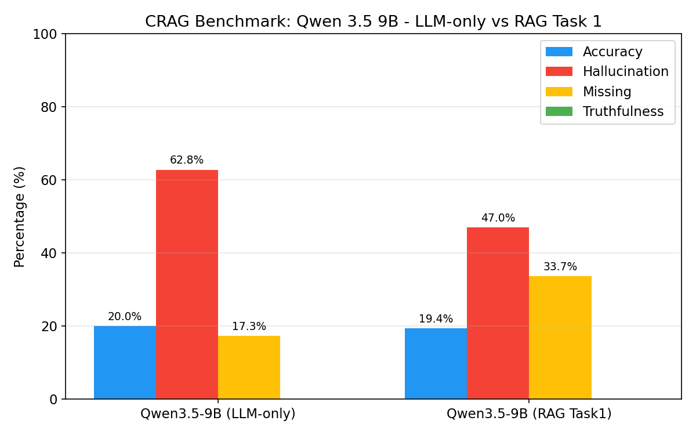
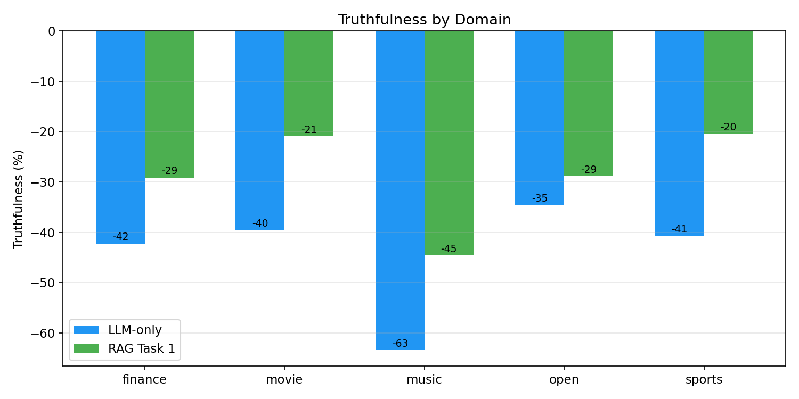
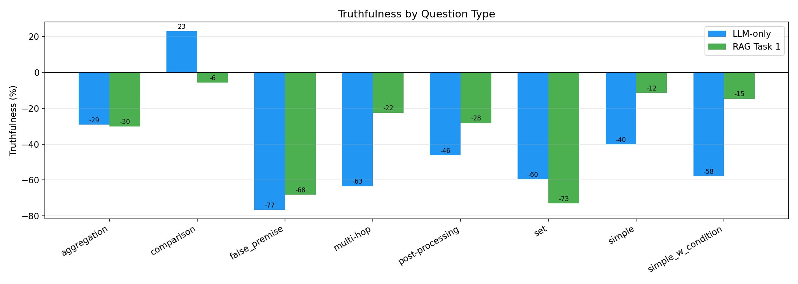
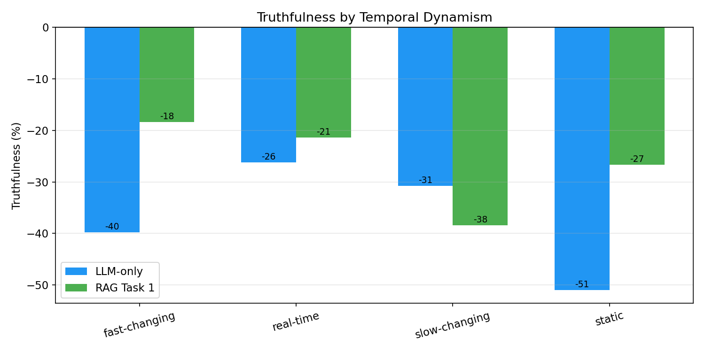
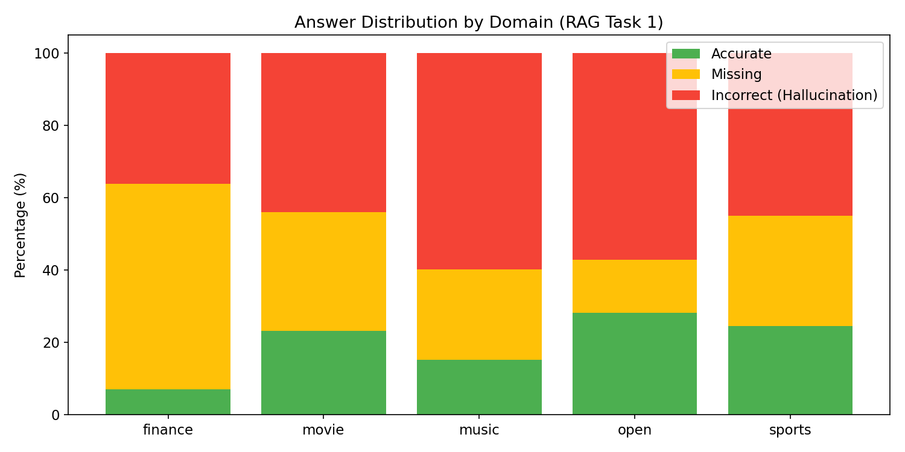

A short walkthrough of what we built, what we measured, and what we learned along the way.
Parametric memory is finite, stale, and silently wrong — three properties a benchmark must expose.
Long-tail facts — niche musicians, mid-cap finance, regional sports — sit beyond the training distribution.
A weight-frozen model cannot answer about events after its cutoff. Real-time prices, scores, and releases are out of reach.
Models rarely say “I don't know.” Wrong answers and right answers are delivered in the same fluent voice.
Yang et al. (2024) build a stress test for factual QA along the dimensions where retrieval most often fails.
Eight categories, ranging from a one-fact lookup to questions that require rejecting an incorrect assumption.
A facet absent from most QA benchmarks. It is exactly where LLM parametric memory breaks down.
A faithful smaller-scale replication, with one constrained question we wanted to answer ourselves.
Same prompts, same metrics, same dataset split.
Qwen 3.5 9B in 4-bit on a single 12 GB GPU — versus the paper's 70B baseline.
Slice the 811 results by domain, dynamism, and question type.
A single 9B model, 4-bit quantized, evaluated on every CRAG validation sample — twice.
Vision-language model, text-only path.
BitsAndBytes 4-bit NF4 quantization.
~5.9 GB VRAM after loading.
NVIDIA RTX 5070 · 12 GB VRAM
Single GPU, batch size of one.
CRAG validation split — 811 samples covering all five domains, all eight question types, all four dynamism levels.
No retrieval. No tools. A clean baseline of the model's parametric memory.
Mirrors the LLM-only prompt from the CRAG paper. The explicit “I don't know” option is critical: the missing rate is what separates a useful model from a hallucinating one.
CRAG provides web search results per question; we pack them into the prompt as retrieved context.
Same answer rules as Setting A — only the context is added. Any improvement is attributable to retrieval, not prompt engineering.
The CRAG metric explicitly rewards abstention — saying nothing beats saying something wrong.
Prediction matches the gold answer (exact, fuzzy containment, or token F1 > 0.6).
The model abstains — “I don't know,” “not enough information,” empty response.
A confident but wrong answer. The most expensive failure mode.
We use rule-based + fuzzy matching evaluation; the original paper used dual LLM auto-evaluators (ChatGPT and Llama 3 70B). Implications discussed in the limitations section.
811 samples. Same model, same prompts, only context differs. Numbers in percentage points.
Hallucination shrinks. The missing bar fills the gap. Accuracy barely moves.

A 7.8× smaller model, evaluated rule-based instead of LLM-judge — yet the qualitative trend is the same.
| Paper · Llama 3 70B Instruct | Ours · Qwen 3.5 9B (4-bit) | |||||
|---|---|---|---|---|---|---|
| Setting | Acc | Hall | Truth | Acc | Hall | Truth |
| LLM-only | 32.3% | 28.9% | +3.4% | 20.0% | 62.8% | −42.8% |
| RAG Task 1 | 35.6% | 31.1% | +4.5% | 19.4% | 47.0% | −27.6% |
| Δ from RAG | +3.3 | +2.2 | +1.1 | −0.6 | −15.8 | +15.2 |
RAG improves truthfulness in both setups. The direction is correct; CRAG's central claim reproduces.
Absolute numbers diverge sharply — our hallucination rate is roughly 2× the paper's. We attribute this to model size, quantization, and a stricter rule-based evaluator.
Sports and movies gain the most; music remains the hardest territory.

| Domain | LLM | RAG | Δ |
|---|---|---|---|
| Finance | −42 | −29 | +13 |
| Movie | −40 | −21 | +19 |
| Music | −63 | −45 | +18 |
| Open | −35 | −29 | +6 |
| Sports | −41 | −20 | +21 |
Truthfulness in percentage points.
Biggest gains come from lookup-shaped queries. Set, comparison, and false-premise questions are largely retrieval-proof.

Simple +29 · Simple-w/-cond +43 · Multi-hop +41
Comparison −29 · Set −13 · Aggregation −1
False-premise — 0% accuracy in both settings; the model takes the bait either way.
Static facts gain 24 pp. Real-time questions barely move; the slow-changing bucket regresses.

| Dynamism | LLM | RAG | Δ |
|---|---|---|---|
| Static | −51 | −27 | +24 |
| Slow-changing | −31 | −38 | −7 |
| Fast-changing | −40 | −18 | +22 |
| Real-time | −26 | −21 | +5 |
Truthfulness in percentage points.
Stacked answer distribution per domain under RAG Task 1. Green is what we want; yellow is acceptable; red is not.

A short summary of the experimental signal across all 811 samples.
A frank account of constraints, plus concrete extensions that follow from the results.